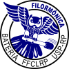

Centros Estudantis
- CEB - Centro Estudantil de Biologia
- CECID - Centro Estudantil de Ciências da Informação e Documentação
- CEFiM - Centro Estudantil de Física Médica
- CEIB - Centro Estudantil de Informática Biomédica
- CEMAN - Centro Estudantil de Matemática Aplicada a Negócios
- CEMus - Centro Estudantil de Música
- CENEQui - Centro de Estudos em Química
- CEP - Centro Estudantil de Psicologia
- CEPed - Centro Estudantil de Pedagogia
- AAALL - Associação Atlética Acadêmica Lucien Lison
- Filormônica - Bateria de samba universitária da Filô